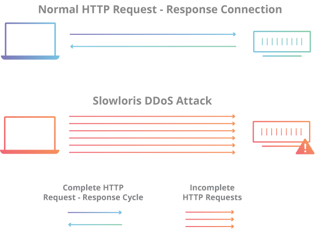
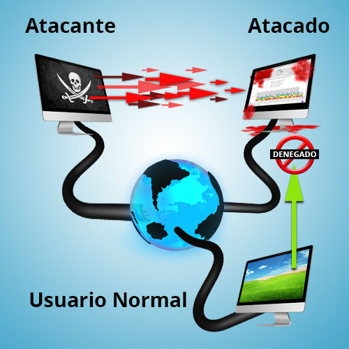
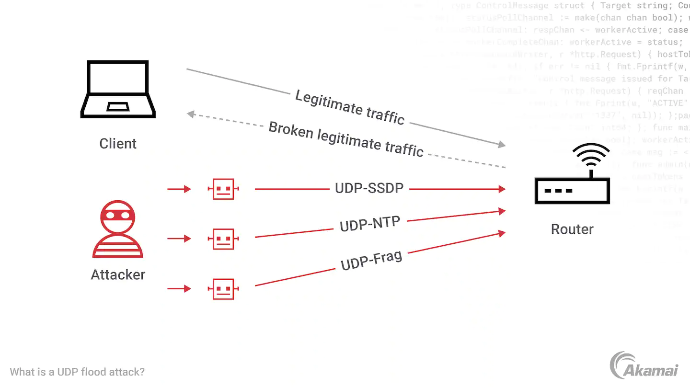

Slowloris
Un ataque Slowloris es un tipo de ataque de denegacion de servicio (DoS) que intenta agotar los recursos del servidor web y hacer que el sitio web sea inaccesible para los usuarios legitimos. En un ataque Slowloris, el atacante envia multiples solicitudes parciales al servidor web, pero mantiene las conexiones abiertas y envia datos a una velocidad muy lenta, lo que hace que el servidor web agote los recursos mientras espera a que se complete la solicitud. De esta manera, el servidor se queda sin recursos y deja de responder a las solicitudes legitimas de los usuarios. A este tipo de ataques se les conoce como ataques bajos y lentos. Entre los mas conocidos estan R-U-Dead-Yet (RUDY) y Slowloris

Socket
Un ataque DoS (Denial of Service) con socket se refiere al uso de un gran numero de conexiones de socket simultaneas para inundar un servidor con solicitudes de conexion, lo que resulta en que el servidor no pueda procesar solicitudes legitimas de los usuarios. En este tipo de ataques, el objetivo principal es abrumar el servidor con una gran cantidad de solicitudes de datos inutiles con la intencion de dejarlo inoperable o inaccesible para los usuarios legitimos. Esto puede tener graves consecuencias como la interrupcion de los servicios y perdida de datos.

UDP Flood
Un ataque UDP Flood es un tipo de ataque de denegacion de servicio (DoS) donde el atacante envia un gran numero de paquetes UDP (User Datagram Protocol) al destino, con el objetivo de sobrecargar la red y hacer que el servicio sea inaccesible para los usuarios legitimos. Este tipo de ataques aprovecha la vulnerabilidad del protocolo UDP, que no tiene mecanismos de verificacion de origen o destinatario, lo que lo hace más dificil de detectar y bloquear. En algunos casos, los atacantes utilizan redes de bots para lanzar ataques UDP Flood masivos, lo que dificulta aun mas su mitigacion.
